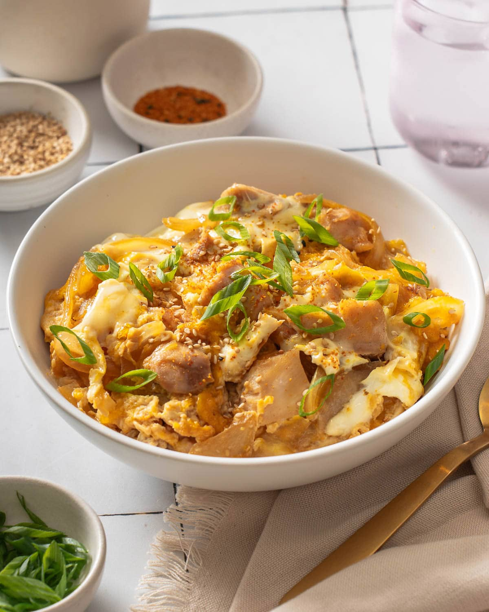

Oyako Don
Home

Quick and easy oyakodon or Japanese chicken and egg rice bowl features juicy tender pieces of chicken, and caramelized onions simmering in an umami-rich broth and then mixed with a soft egg scramble to be served over a warm bed of steamed rice.
Ingredients
- Chicken Thigh
- Sake
- Salt & White Pepper
- Dashi
- Soy Sauce
- Mirin
- Sugar
- Eggs
- Yellow Onion
- White Rice
- Green Onion
- Toasted Sesame Seeds
Steps
- Marinate the chicken.
- Make the dashi mixture.
- Gently mix the eggs.
- Cook the onion and dashi stock.
- Add chicken.
- Add eggs.
- Serve.